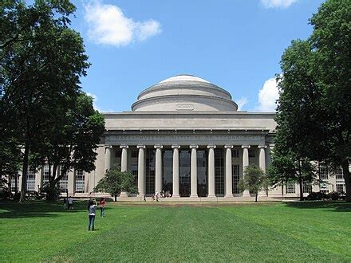
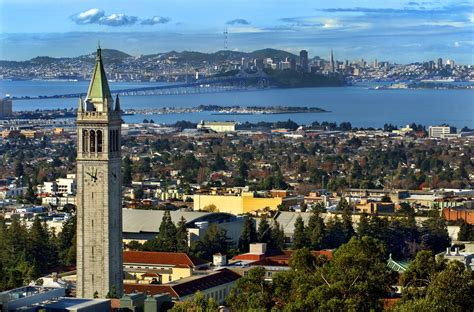
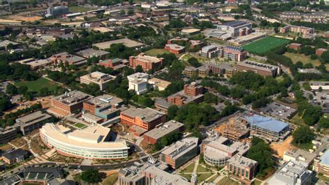
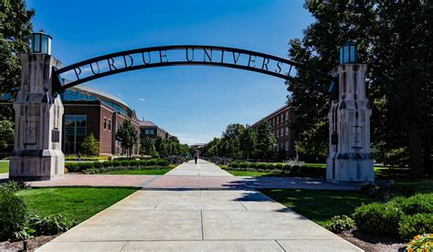
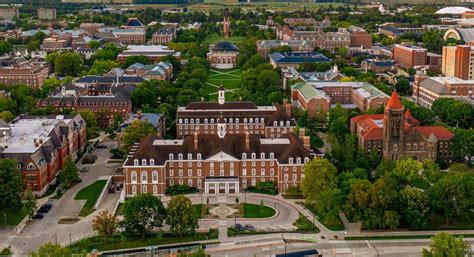
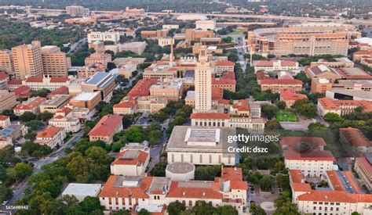
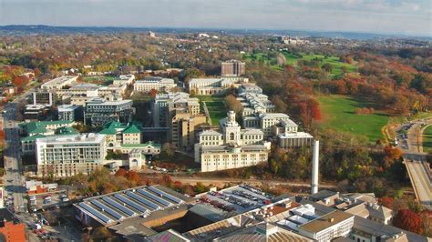
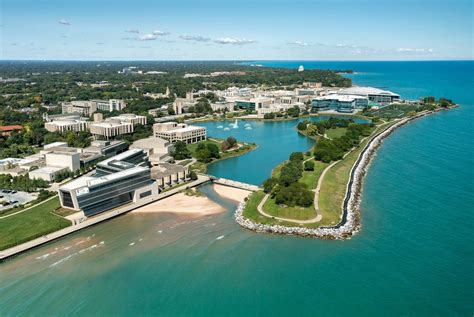
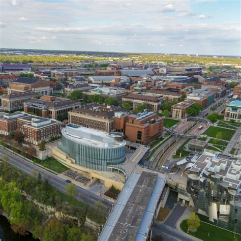
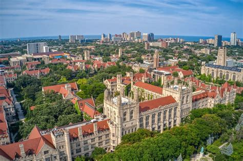

Top 10
Massachusetts Institute of Technology
#1 in the U.S. for Engineering.
Located in Cambridge, Massachusetts, MIT has a nationally recognized level of excellence for science programs!

“Massachusetts Institute of Technology.” Wikipedia, Wikimedia Foundation, 18 Oct. 2026, en.wikipedia.org /wiki/Wikipedia:GLAM/Massachusetts _Institute_of_Technology.
MIT Graduate AdmissionsStanford University
#2 in the U.S. for Engineering.
Stanford is located in the city of Palo Alto. It offers stunning views, stellar education, and opportunities of a lifetime!

“Stanford University Wallpapers - Wallpaper Cave.” WallpaperCave, wallpapercave.com/stanford-university-wallpapers.
Stanford Graduate AdmissionsUniversity of California - Berkeley
#3 in the U.S. for Engineering.
UC Berkeley is known for its beautiful location in Berkeley, California, and it is also known for its high graduate success rate!

Kelly, John. “John Kelly, Attorney.” 2022, 1 Jan. 1970, blog.law-kelly.com/2022/.
UC Berkeley Graduate AdmissionsGeorgia Institute of Technology
#4 in the U.S. for Engineering.
GeorgiaTech in Atlanta, Georgia has a diverse and vibrant community!

Georgia Institute of Technology in Atlanta Image - Free Stock Photo - Public Domain Photo - CC0 Images, www.goodfreephotos.com/united-states/georgia/atlanta/georgia-institute-of-technology-in-atlanta.jpg.php
Georgia Tech Graduate AdmissionsPurdue University
#4 in the U.S. for Engineering.
Purdue is known for its amazing campus in West Lafayette, Indiana. It has a strong engineering program and an enjoyable campus!

University Entrance Arch · Free Stock Photo, www.pexels.com/photo/university-entrance-arch-247823/
Purdue Graduate AdmissionsCalifornia Institute of Technology
#6 in the U.S. for Engineering.
Located in Pasadena, California, CalTech has a beautiful campus and lots of opportunities and organizations!
“Caltech Wallpapers.” Wallpapers.Com, wallpapers.com/caltech.
CalTech Graduate AdmissionsUniversity of Illinois - Urbana Champaign
#6 in the U.S. for Engineering.
University of Illinois - Urbana Champaign is a top ranking school local to the midwest!

Castillo, Juan José Mendoza. “History of Programs at University of Illinois - Urbana Champaign.” Blog, 28 Mar. 2025, sabordavida.pt/ qual-e-a-historia-e-os-principais-programas-da-u-of-illinois-at-urbana-champaign/.
University of Illinois - Urbana Champaign Graduate AdmissionsUniversity of Texas - Austin
#6 in the U.S. for Engineering.
University of Texas - Austin has an artsy and enriching scientific program!

University of Texas UT Austin Campus Aerial View from Helicopter High-Res Stock Photo - Getty Images, www.gettyimages.com/detail/photo/ university-of-texas-ut-austin-campus-aerial-view-royalty-free-image/165698942
University of Texas - Austin Graduate AdmissionsUniversity of California - San Diego
#9 in the U.S. for Engineering.
UC-San Diego is known for its beautiful location in La Jolla, California, and it is also known for its high graduate success rate!

“UC San Diego Campus Highlights.” California.Com, www.california.com/uc-san-diego-campus-highlights/
UC San Diego Graduate AdmissionsCarnegie Mellon University
#10 in the U.S. for Engineering.
Carnegie Mellon is located in Pittsburgh, Pennsylvania, and it is known for its strong computer science and engineering programs!

Carnegie Mellon University Wallpapers - Top Free Carnegie Mellon University Backgrounds - Wallpaperaccess, wallpaperaccess.com/carnegie-mellon-university
Carnegie Mellon Graduate AdmissionsLocal 10
University of Illinois - Urbana Champaign
#6 in the U.S. for Engineering.
University of Illinois - Urbana Champaign is a top ranking school local to the midwest!
Castillo, Juan José Mendoza. “History of Programs at University of Illinois - Urbana Champaign.” Blog, 28 Mar. 2025, sabordavida.pt/ qual-e-a-historia-e-os-principais-programas-da-u-of-illinois-at-urbana-champaign/.
University of Illinois - Urbana Champaign Graduate AdmissionsUniversity of Michigan - Ann Arbor
#12 in the U.S. for Engineering.
UM-Ann Arbor is a beautiful and historic college filled with bright and inquisitive students!
www.collegetuitioncompare.com/edu/ 170976/university-of-michigan-ann-arbor/.
UM-Ann Arbor Graduate AdmissionsNorthwestern University
#16 in the U.S. for Engineering.
Located in Chicago, Illinois, Northwestern offers an urban, thrilling, and social graduate experience!

University Reviews Policies after Off-Campus Shooting - Northwestern Now, news.northwestern.edu/stories/2023/ 04/university-reviews-policies-after-off-campus-shooting.
Northwestern Graduate AdmissionsUniversity of Wisconsin - Madison
#27 in the U.S. for Engineering.
UW-Madison is part of the big 10 schools in America, and it offers a fun and enriching experience!

“University of Wisconsin–Madison Named an Innovation and Economic Prosperity University.” News, 15 Oct. 2025, news.wisc.edu/ university-of-wisconsin-madison-named-an-innovation-and-economic-prosperity-university/.
UW-Madison Graduate AdmissionsUniversity of Minnesota - Twin Cities
#36 in the U.S. for Education.
UM-Twin Cities is a local, educational, and uplifting college located in Twin Cities, Minnesota.

“Visit the University of Minnesota Twin Cities.” Visit Us | University of Minnesota Twin Cities, admissions.tc.umn.edu/visit/visit-university-minnesota-twin-cities.
UM-Twin Cities Graduate AdmissionsMichigan State University
#62 in the U.S. for Engineering.
Michigan State is located in East Lansing, Michigan, and it offers a spirited and academic-centered lifestyle!

“Michigan State University: Lansing, MI.” Choose Lansing, www.lansing.org/michigan-state-university/.
Michigan State Graduate AdmissionsUniversity of Chicago
#68 in the U.S. for Engineering.
Located in Chicago, University of Chicago offers a savvy and supreme education!

Smentkowski, Elena. “Illinois Licenses Are Set for Some Big Changes in 2025-Here’s What to Know.” Secret Chicago, 26 Feb. 2025, secretchicago.com/illinois-id-laws-2025/.
University of Chicago Graduate AdmissionsIllinois Institute of Technology
#105 in the U.S. for Engineering.
Illinois Tech is located in Chicago, Illinois, and it offers an education mixed with city living!
Fortnow, Lance. A New College of Computing at Illinois Tech, 1 Jan. 1970, blog.computationalcomplexity.org/2020/03/ a-new-college-of-computing-at-illinois.html.
Illinois Tech Graduate AdmissionsMarquette University
#142 in the U.S. for Engineering.
Marquette is located in the heart of downtown Milwaukee, Wisconsin. It offers a city experience while being local and close to home!
“Get Ready for AWARM Welcome.” Marquette University, www.marquette.edu/visit/.
Marquette Graduate AdmissionsUniversity of Wisconsin - Milwaukee
#168 in the U.S. for Engineering.
UW-Milwaukee offers a beautiful campus nestled in an urban environment!

Facebook, www.facebook.com/uwmstugov/.
UW-Milwaukee Graduate Admissions